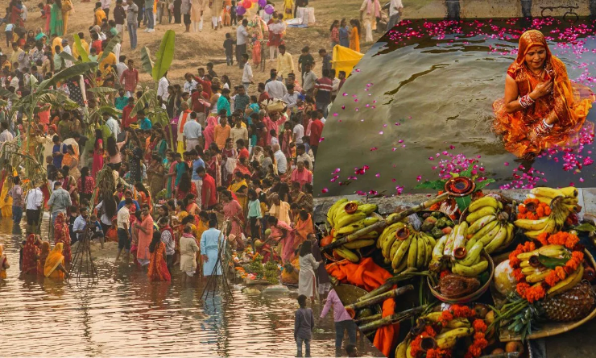

Welcome to Bihar!

Bihar, situated in eastern India, is renowned for its deep cultural roots, vibrant festivals, and historical significance. The state's culture is a tapestry woven with ancient traditions, spiritual practices, and artistic expressions that reflect its diverse heritage. Festivals such as Chhath Puja, revered for its rituals honoring the Sun God, and the Sonepur Mela, one of Asia's largest cattle fairs, are celebrated with fervor and draw visitors from far and wide.
Bihari cuisine is a delightful fusion of flavors and textures, characterized by dishes like Litti Chokha, a savory stuffed bread served with mashed vegetables, and Sattu Paratha, made from roasted gram flour. These dishes highlight Bihar's agrarian lifestyle and the ingenuity of its culinary traditions.
Music and dance play an integral role in Bihar's cultural fabric, with folk arts like Jat-Jatin, Jhumar, and Soharaiya adding rhythm and color to social gatherings and festive occasions. These performances often reflect themes of rural life, love, and devotion, resonating deeply with the local communities.
Bihar's historical significance is underscored by ancient sites like Nalanda and Vikramshila, renowned centers of learning in ancient India and UNESCO World Heritage Sites today. These sites attract scholars and history enthusiasts alike, showcasing Bihar's intellectual prowess and scholarly achievements in fields ranging from Buddhism to mathematics and astronomy.
The state is also famous for its vibrant folk arts and crafts, including the intricate Madhubani paintings, renowned for their intricate designs and vivid colors depicting mythological themes and everyday life. Other crafts such as Tikuli art, Manjusha paintings, and traditional pottery reflect the artistic prowess and cultural diversity of Bihar's artisans.